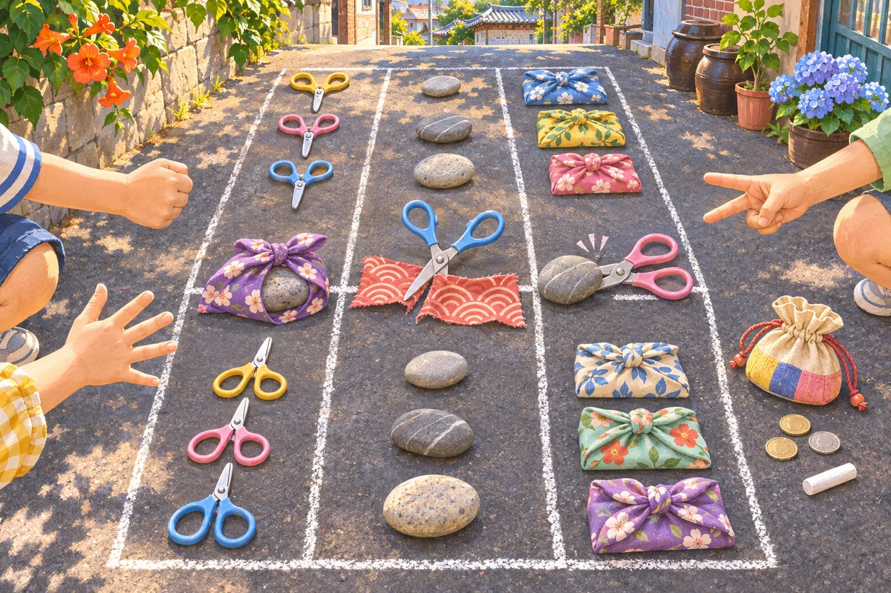

안 내면 진다, 가위바위보: 버릇을 읽는 오토배틀 기획
제목 미정 / 틀: 사서 세워 두면 알아서 싸우는 오토배틀 / 수치는 전부 시제품에서 확인할 가설이다
말은 가위, 바위, 보 세 가지뿐이다. 분필로 그은 세 줄에 말을 세우고 한꺼번에 낸다. 낸 뒤에는 손을 못 댄다. 두 줄을 따면 판을 이기고, 두 판을 따면 승부를 이긴다. 상대마다 버릇이 하나씩 있고, 그 버릇을 읽는 것이 실력이다.

틀은 오토배틀이다. 말을 사서 판에 세우면 싸움은 알아서 굴러간다. 여기에 가위바위보를 통째로 넣었다. 체력도 공격력도 없다. 누가 누구를 이기는지는 누구나 아는 상성 하나로 정해진다. 그래서 싸움을 지켜보는 동안 셈을 하지 않아도 되고, 짜는 동안에는 한 가지만 생각한다. 저 아이는 이번에 무엇을 낼까.
가위바위보는 아무렇게나 내는 상대에게는 이길 방법이 없는 놀이다. 그런데 사람은 아무렇게나 내지 못한다. 이긴 것을 또 내고, 지면 바꾼다. 이 기획의 상대 아홉은 그런 버릇을 하나씩 갖고 있다. 새로 지어낸 낱말은 쓰지 않았다. 줄, 판, 삼세판, 급, 주머니, 버릇, 따먹기처럼 원래 있는 말만 썼다.
좁은 화면에서는 표를 좌우로 밀어 나머지 열을 볼 수 있다.
1. 틀: 오토배틀에서 가져오는 것과 바꾸는 것
오토배틀에서 지키고 싶은 재미는 셋이다. 가게에 나온 것으로 그때그때 판을 짜는 재미, 같은 말을 모아 키우는 재미, 손을 뗀 채 내 판이 싸우는 것을 지켜보는 재미다. 이 셋은 그대로 두고, 나머지는 가위바위보에 맞게 줄였다.
| 흔한 오토배틀 | 이 기획 | 바꾼 이유 |
|---|---|---|
| 사서 세우면 싸움은 자동 | 그대로 | 틀이다 |
| 같은 말 셋을 합쳐 키운다 | 그대로. 급은 셋까지 | 모으는 재미는 남긴다 |
| 체력과 공격력 | 없다. 상성과 급만 본다 | 누가 이기는지 셈 없이 보인다 |
| 종족과 직업 시너지 수십 가지 | 묶음 하나. 같은 것 셋이 한 줄이면 한 급 높게 친다 | 외울 것이 없다 |
| 넓은 판에서 가까운 적을 알아서 찾는다 | 세 줄, 맨 앞끼리만 부딪친다 | 누가 누구와 만나는지를 짜는 사람이 정한다. 읽기가 판에 그대로 옮겨진다 |
| 여덟 명이 돌아가며 붙는다 | 한 상대와 삼세판 | 같은 상대와 이어서 붙어야 버릇이 보인다 |
| 상대 판을 구경하러 간다 | 지난 판이 공책에 남는다 | 볼 것을 한 장으로 줄인다 |
| 이자가 붙는 돈 | 판마다 같은 동전. 이자 없음 | 머리는 돈이 아니라 상대에게 쓴다 |
| 등수 다툼 | 대회 한 번, 목숨 셋 | 혼자서 30분 안에 끝난다 |
2. 세계: 한 문단과 규칙 셋
여름방학, 동네 문방구 앞에서 가위바위보 대회가 열린다. 이 동네 아이들은 손 대신 주머니 속 물건을 낸다. 가위, 돌멩이, 보자기다. 골목 바닥에 분필로 세 줄을 긋고, 구령에 맞춰 한꺼번에 내려놓는다. 플레이어는 대회에 나간 아이 하나다.
- 가위는 보를, 보는 바위를, 바위는 가위를 이긴다. 가위는 보자기를 자르고, 보자기는 돌을 싸고, 돌은 가위를 망가뜨린다.
- 낸 것은 못 바꾼다. 구령이 끝나면 손을 뗀다. 싸움은 말들이 알아서 한다.
- 이기면 하나 딴다. 승부를 이긴 쪽이 진 쪽의 말 하나를 골라 가진다. 구슬과 딱지처럼 따먹기다.
가위바위보의 보는 보자기다. 그래서 종이가 아니라 천으로 그린다. 조각보, 보따리 같은 말이 여기서 나온다. 분위기는 밝고 장난스럽다. 지면 분하고 이기면 으쓱한 정도다.
3. 판: 세 줄, 아홉 칸
내 쪽에 세 줄이 있고 줄마다 앞, 가운데, 뒤 세 자리가 있다. 모두 아홉 칸이다. 상대도 같은 판을 마주 놓는다. 왼쪽 줄은 왼쪽 줄과, 가운데는 가운데와, 오른쪽은 오른쪽과 싸운다. 줄끼리는 서로 넘나들지 않는다.
- 셋으로만 짠다. 말 세 가지, 세 줄, 세 자리, 급 셋, 삼세판, 목숨 셋, 가게의 세 자리, 주머니 세 칸. 수를 외울 일이 없게 했다.
- 자리는 동네가 바뀔 때 열린다. 골목에서는 앞자리만 쓴다. 세 칸이다. 놀이터에서는 가운데 자리가 열려 여섯 칸, 운동장에서는 뒷자리까지 아홉 칸이 된다.
- 처음은 가위바위보 세 번이다. 골목에서는 줄마다 말이 하나뿐이라, 한 판이 가위바위보를 한꺼번에 세 번 하는 것과 같다. 순서와 묶음은 그 뒤에 하나씩 얹힌다.
- 빈 줄. 줄을 비워 두면 그 줄은 싸우지 않고 내준다. 한 줄을 버리고 두 줄에 거는 것도 수다.
세 줄인 이유. 넓은 판에서는 누가 누구와 만날지 알기 어렵다. 그러면 가위로 보를 잡겠다는 생각이 판에 옮겨지지 않는다. 줄로 나누면 어느 줄 맨 앞에 무엇을 세울지가 곧 무엇을 낼지가 된다. 세 줄 가운데 둘을 따면 이기므로 한 줄을 틀려도 판은 남는다.
4. 부딪침의 규칙 여섯 가지
- 맨 앞끼리 부딪친다. 줄마다 양쪽의 맨 앞 말이 만난다.
- 상성에서 이긴 말이 남는다. 진 말은 쓰러진다. 이긴 말은 다치지 않는다.
- 같은 것끼리는 급이 높은 말이 남는다. 급도 같으면 둘 다 쓰러진다.
- 급이 둘 높으면 상성을 뒤집는다. 3급 바위는 1급 보를 이긴다. 2급 보에게는 진다.
- 남은 말은 그 자리에서 다음 말을 맞는다. 한쪽 줄이 비면 남은 쪽이 그 줄을 딴다. 둘이 같이 비면 비긴 줄이다.
- 딴 줄이 많은 쪽이 판을 이긴다. 같으면 비긴 판이고, 세지 않고 다시 낸다.
- 왼쪽 줄. 내 바위가 보에게 진다. 뒤에 있던 내 가위가 나와 그 보를 이긴다. 상대의 바위가 나와 내 가위를 이긴다. 내 줄이 비었으니 상대가 딴다.
- 가운데 줄. 가위와 가위가 만나 둘 다 쓰러진다. 내 보가 상대의 바위를 이긴다. 내가 딴다.
- 오른쪽 줄. 내 보가 가위에게 진다. 내 바위가 나와 가위를 이기고, 뒤에서 나온 가위도 이긴다. 내가 딴다.
두 줄을 땄으니 이 판은 내가 이겼다.
받치기
오른쪽 줄의 내 바위는 가위 둘을 내리 이겼다. 이긴 말이 다치지 않으니, 같은 것만 쌓은 줄은 그것을 이기는 말 하나에 통째로 무너진다. 그래서 뒤에 세우는 말은 앞의 말을 받쳐야 한다. 앞이 바위면 바위를 이기는 것은 보다. 그러니 뒤에는 보를 이기는 가위를 둔다. 바위 뒤에 가위, 가위 뒤에 보, 보 뒤에 바위다.
체력이 없는 이유. 수치가 있으면 조금 불리한 상성은 숫자로 덮인다. 그러면 무엇을 낼지보다 얼마나 키웠는지가 앞선다. 여기서는 상성이 먼저고 급은 그다음이다. 1급 보 하나가 2급 바위 줄을 무너뜨릴 수 있어야 읽은 값이 난다. 넷째 규칙은 그래도 키운 보람은 있게 하려고 둔 것이다.
5. 급과 묶음
급
- 같은 말 셋이 모이면 한 급 오른다. 판에 있든 주머니에 있든 저절로 합쳐진다. 1급 셋이 2급, 2급 셋이 3급이다. 3급 하나는 1급 아홉 개다.
- 급이 하는 일은 둘이다. 같은 것끼리 만났을 때 이긴다. 두 급 낮은 말에게는 상성으로도 지지 않는다.
- 급이 못 하는 일. 한 급 차이로는 상성을 못 넘는다. 3급 가위도 2급 바위에게 진다.
묶음
같은 종류 셋이 가로로든 세로로든 나란히 서면 묶음이다. 세로는 한 줄의 앞, 가운데, 뒤다. 가로는 세 줄의 같은 자리다. 묶음에 든 말은 한 급 높게 친다. 가로와 세로가 겹치면 두 급 높게 친다. 3급이 끝이다.
| 세우는 법 | 좋은 점 | 나쁜 점 |
|---|---|---|
| 섞어서 받친다 | 무엇이 나와도 줄이 통째로 무너지지 않는다 | 묶음이 없다. 같은 것끼리 만나면 묶음 쪽에 진다 |
| 모아서 묶는다 | 한 급 높게 친다. 같은 것끼리는 이기고, 두 급 낮은 상성은 넘는다 | 급이 비슷한 상성 하나에 줄이 무너진다. 무엇을 모았는지 한눈에 읽힌다 |
아홉 칸을 1급 바위로만 채우면 모든 말이 가로와 세로로 겹쳐 3급으로 친다. 1급 보로는 못 이긴다. 2급 보 하나면 그 줄이 무너진다. 묶음은 세게 미는 수이고, 무엇으로 미는지 들키는 수다.
6. 말 열두 가지
종류마다 넷이다. 하나는 특기가 없고 셋은 특기가 하나씩 있다. 특기는 그 물건이 원래 하는 일에서 가져왔다. 가위는 자르고 소리를 낸다. 돌은 누르고, 갈고, 날아간다. 보자기는 잇고, 싸고, 품는다.
| 종류 | 말 | 특기 | 가게에 나오는 때 |
|---|---|---|---|
| 가위 | 문구 가위 | 없다 | 골목 |
| 쪽가위 | 먼저 벤다. 급이 같은 가위끼리 만나면 쪽가위가 남는다 | 골목 | |
| 엿장수 가위 | 불러낸다. 싸움이 시작될 때 철컥 소리를 내면 맞은편 줄 맨 뒤의 말이 맨 앞으로 나온다 | 놀이터 | |
| 재단 가위 | 끊는다. 맞은편 줄의 말은 묶음으로 얻은 급을 잃는다 | 운동장 | |
| 바위 | 조약돌 | 없다 | 골목 |
| 누름돌 | 누른다. 상성으로 질 때 자기를 이긴 말을 누르고 같이 쓰러진다 | 골목 | |
| 숫돌 | 간다. 바로 뒤에 선 가위를 한 급 높게 친다 | 놀이터 | |
| 짱돌 | 날아간다. 싸움이 시작될 때 맞은편 줄 맨 뒤의 말과 한 번 겨룬다. 이기면 그 말이 쓰러지고, 지거나 비기면 아무 일도 없다 | 운동장 | |
| 보 | 손수건 | 없다 | 골목 |
| 조각보 | 잇는다. 묶음을 셀 때 어느 종류로도 친다 | 골목 | |
| 보자기 | 싼다. 바위를 이기면 그 바위를 싸 와서 이번 판 동안 내 줄 맨 뒤에 세운다 | 놀이터 | |
| 보따리 | 품는다. 짤 때 주머니의 말 하나를 안에 넣어 둔다. 보따리가 쓰러지면 그 말이 그 자리에 나온다. 안은 상대에게 보이지 않는다 | 운동장 |
- 특기는 상성을 바꾸지 않는다. 가위가 바위를 이기게 해 주는 특기는 없다. 순서를 흔들거나, 묶음을 건드리거나, 속을 감출 뿐이다.
- 종류를 넘는 짝이 있다. 숫돌 뒤의 가위가 그렇다. 바위 뒤에는 원래 가위를 받치므로, 받치는 순서가 그대로 짝이 된다.
- 읽기를 건드리는 말이 있다. 엿장수 가위는 상대의 받치는 순서를 뒤집는다. 맨 뒤에 무엇을 세웠을지 맞혀야 쓸모가 있다. 보따리는 내 속을 감춘다.
7. 상대: 버릇 아홉 가지
이 게임의 적은 상대의 말이 아니라 상대의 버릇이다. 상대는 판이 끝날 때마다 정해진 버릇대로 판을 고친다. 버릇은 하나뿐이고 한 문장으로 적힌다. 알아채면 다음 판에 무엇이 나올지 보인다.
상대마다 넷이 정해져 있다. 붙기 전에 듣는 소문, 판을 고치는 버릇, 버릇을 알았을 때 쓸 수 있는 수, 이기면 따 올 만한 말이다.
골목: 앞자리 세 칸
| 상대 | 소문 | 버릇 | 상대하는 법 | 따 올 만한 말 |
|---|---|---|---|---|
| 바위만 내는 동생 | 쟤는 주먹밖에 몰라 | 세 줄 다 바위다. 져도 안 바꾼다 | 보를 산다. 바위 셋은 묶음이라 2급으로 치지만, 1급 보는 한 급 차이의 상성이라 그대로 이긴다 | 누름돌 |
| 이기면 그대로 두는 아이 | 한번 통한 건 또 내더라 | 이긴 줄은 손대지 않는다. 지거나 비긴 줄은 다른 종류로 바꾼다 | 내가 진 줄의 상대 말은 다음 판에도 그 자리에 있다. 그것을 이기는 말을 세운다. 내가 이긴 줄은 상대가 바꾼다. 가위로 졌다면 다음은 바위 아니면 보다. 보를 내면 지지 않는다 | 쪽가위 |
| 지면 갚으려는 아이 골목대장 | 진 건 꼭 갚아 준대 | 진 줄에는 자기를 이긴 말을 이기는 것을 낸다. 이기거나 비긴 줄은 그대로 둔다 | 한 수 더 간다. 내 바위가 이긴 줄에는 보가 나온다. 그 줄에 가위를 세운다. 세 줄을 다 읽을 수 있다. 다만 그 말이 주머니에 있어야 한다 | 보자기. 가게에는 놀이터부터 나온다 |
놀이터: 앞과 가운데 여섯 칸
| 상대 | 소문 | 버릇 | 상대하는 법 | 따 올 만한 말 |
|---|---|---|---|---|
| 따라쟁이 | 남이 낸 걸 보고 배운대 | 내가 지난 판에 낸 것을 가진 말로 줄과 순서까지 흉내 낸다. 첫 판은 아무렇게나 낸다 | 지난 판의 나를 이기는 판을 낸다. 그다음 판에는 그 판을 흉내 낼 테니 또 한 번 돌린다. 같은 판을 두 번 내면 비긴다 | 2급 조각보 |
| 돌려 내는 아이 | 자리만 바꿔 앉는다더라 | 판마다 세 줄을 오른쪽으로 한 줄씩 옮긴다. 줄 안의 순서는 그대로다 | 한 판을 보면 다음 판이 정해진다. 첫 판을 져도 둘째와 셋째 판을 가져올 수 있다 | 엿장수 가위 |
| 늦게 내는 아이 놀이터 대장 | 쟤는 꼭 한 박자 늦어 | 내 줄 하나를 보고 낸다. 볼 줄은 판마다 왼쪽부터 차례로 바뀌고, 미리 표시된다. 본 줄은 가진 말로 받아친다 | 보이는 줄을 버리고 두 줄에 건다. 또는 보이는 줄에 센 말을 세워 상대가 거기에 말을 쏟게 한다. 보따리의 속은 늦게 내도 못 본다 | 보따리. 가게에는 운동장부터 나온다 |
운동장: 아홉 칸
| 상대 | 소문 | 버릇 | 상대하는 법 | 따 올 만한 말 |
|---|---|---|---|---|
| 한 가지로 미는 형 | 아홉 개를 똑같은 걸로 깐대 | 아홉 칸을 한 종류로 채워 묶음을 겹친다. 지면 자기를 이긴 종류를 이기는 것으로 통째로 바꾼다 | 1급으로는 상성으로도 못 이긴다. 2급 상성 말을 줄마다 세운다. 재단 가위로 묶음을 끊는다. 무엇으로 바꿀지는 정해져 있으니 다음 판을 미리 짠다 | 짱돌 |
| 변덕쟁이 | 쟤는 자기도 뭘 낼지 모른대 | 없다. 정말 아무렇게나 낸다 | 읽을 것이 없다. 받치는 순서와 급으로 평균을 이긴다. 읽기가 안 통하는 상대가 하나 있어야 키운 판의 값이 드러난다 | 3급 말이 하나 섞여 있다 |
| 문방구 할머니 결승 | 네가 뭘 사 갔는지 다 아신다 | 없다. 대신 내 버릇을 센다 | 11절에 따로 적었다 | 우승 |
버릇을 읽는 한 승부
골목대장과 붙는다. 첫 판에 나는 왼쪽부터 바위, 가위, 보를 냈고 상대는 가위, 바위, 보를 냈다. 왼쪽은 내가 이겼고 가운데는 졌고 오른쪽은 비겼다. 비긴 판이라 다시 낸다.
- 왼쪽. 상대의 가위가 내 바위에게 졌다. 갚으려는 아이는 바위를 이기는 보를 낸다. 나는 가위를 세운다.
- 가운데. 상대의 바위가 이겼다. 그대로 둔다. 나는 보를 세운다.
- 오른쪽. 비겼다. 진 것이 아니니 그대로 둔다. 보다. 나는 가위를 세우고 싶다.
그러면 가위가 둘, 보가 하나 있어야 한다. 가진 가위가 하나뿐이면 왼쪽과 오른쪽 가운데 한 줄만 이긴다. 버릇을 읽는 것은 절반이고, 읽은 대로 낼 말을 갖춰 두는 것이 나머지 절반이다. 가게와 주머니가 그 일을 한다.
버릇이 하나뿐인 이유. 버릇이 여럿이거나 확률로 섞이면 알아챈 것인지 운이 좋았던 것인지 알 수 없다. 한 문장짜리 버릇은 두 판이면 드러나고, 드러난 뒤에는 틀림없이 통한다. 어려움은 버릇을 꼬는 데 두지 않는다. 읽은 대로 낼 말이 모자란 데, 그리고 상대가 버릇대로 고친 판이 그 자체로 세다는 데 둔다.
8. 읽기: 공책에 남는 것
구령 전에는 상대의 판이 보이지 않는다. 구령이 끝나면 양쪽 판이 한꺼번에 드러난다. 그 사이에 볼 수 있는 것은 공책 한 장이다.
| 때 | 보이는 것 | 안 보이는 것 |
|---|---|---|
| 붙기 전 | 소문 한 줄. 상대가 가진 말의 종류별 수 | 어느 줄에 무엇을 세울지 |
| 첫 판 뒤 | 양쪽이 낸 판 전부. 어느 줄을 누가 땄는지 | 상대의 주머니. 보따리의 속 가운데 나오지 않은 것 |
| 둘째 판 뒤 | 판 사이에 상대가 무엇을 고쳤는지. 바뀐 칸에 표시가 붙는다 | 버릇의 이름. 그것은 플레이어가 알아챈다 |
| 승부 뒤 | 상대의 버릇이 수첩에 한 문장으로 적힌다. 이겼을 때만 적힌다 | 없다 |
- 상대도 같은 것만 본다. 상대는 내 판을 미리 보지 않는다. 늦게 내는 아이만 한 줄을 보고, 그 줄은 미리 표시된다.
- 지워 가며 고르기. 상대가 안 낼 것을 하나 지울 수 있으면 지지 않는 수가 나온다. 가위를 안 낼 상대에게는 보를 낸다. 보는 가위에게만 지기 때문이다.
- 말의 수가 귀띔이다. 가위가 다섯이고 보가 하나인 상대는 가위를 많이 세울 수밖에 없다. 어느 줄인지만 모른다.
9. 짜기: 동전, 가게, 주머니
| 항목 | 값 |
|---|---|
| 대회를 시작할 때 받는 동전 | 9 |
| 판마다 받는 동전 | 6 |
| 승부를 이기면 더 받는 동전 | 3 |
| 말 하나의 값 | 3 |
| 가게를 다시 뽑는 값 | 1 |
| 말을 팔고 받는 동전 | 1 |
| 가게에 나오는 말 | 3 |
| 주머니 | 3칸 |
- 가게는 1급만 판다. 높은 급은 합쳐서 만들거나 상대에게서 딴다.
- 판에 세운 말은 판마다 얼마든지 옮긴다. 가위바위보는 매번 새로 내는 놀이다. 옮기는 데 값은 없다.
- 남은 동전은 다음 판으로 넘어간다. 이자는 없다.
- 비긴 판에는 동전이 없다. 가진 말로 다시 낸다.
주머니가 세 칸인 이유. 판은 얼마든지 고칠 수 있지만 고칠 재료는 주머니에 든 셋뿐이다. 가위, 바위, 보를 하나씩 넣어 두면 어느 줄이든 한 번은 받아칠 수 있고 합칠 말을 모아 둘 자리가 없다. 같은 것 둘을 넣어 두면 급은 오르는데 읽고도 못 받아치는 줄이 생긴다. 키우기와 받아치기가 같은 세 칸을 다툰다.
10. 대회 한 번의 흐름
- 짜기공책을 보고, 가게에서 사고, 세 줄에 세운다
- 내기구령에 맞춰 양쪽 판이 한꺼번에 드러난다
- 싸움왼쪽 줄부터 한 줄씩. 손을 못 댄다
- 적기판이 공책에 남는다. 두 판을 딸 때까지 되풀이한다
| 단위 | 이기는 법 | 걸리는 시간 |
|---|---|---|
| 줄 | 맞은편 줄을 비운다 | 몇 초 |
| 판 | 세 줄 가운데 더 많이 딴다 | 짜기까지 1분쯤 |
| 승부 | 두 판을 먼저 딴다. 결승만 세 판을 먼저 딴다 | 3분쯤 |
| 대회 | 상대 아홉을 차례로 이긴다 | 30분쯤 |
- 동네 셋. 골목, 놀이터, 운동장이다. 동네마다 상대가 셋이고 셋째가 대장이다. 운동장의 셋째가 결승이다.
- 목숨 셋. 승부를 지면 목숨 하나를 잃고 같은 상대와 다시 붙는다. 상대의 버릇과 말은 그대로다. 진 승부에서 본 것이 다음 승부의 밑천이다.
- 따먹기. 승부를 이기면 상대가 마지막 판에 낸 말 가운데 하나를 골라 가진다. 급은 그대로다. 대장은 다음 동네의 말을 하나 들고 있다.
- 상대의 크기. 상대의 말은 동네마다 정해 둔 값에 맞춘다. 내가 못 키웠다고 약해지지 않고 잘 키웠다고 세지지 않는다.
11. 결승: 내 버릇을 세는 사람
결승 상대는 문방구 할머니다. 대회 내내 말을 판 사람이고, 가게 앞 평상에서 모든 승부를 본 사람이다. 할머니에게는 버릇이 없다. 대신 여덟 승부 동안 내가 어떻게 냈는지를 세어 두었다.
| 세는 것 | 할머니가 하는 일 |
|---|---|
| 이긴 줄을 그대로 두는가 | 자주 그랬다면, 내가 이긴 줄에 그 말을 이기는 것을 세운다 |
| 진 줄을 무엇으로 바꾸는가 | 갚는 쪽으로 바꿔 왔다면, 그 갚는 말을 이기는 것을 세운다 |
| 첫 판 맨 앞에 무엇을 자주 내는가 | 줄마다 가장 자주 낸 것을 이기는 말을 첫 판에 세운다 |
- 내 버릇도 공책에 있다. 결승 전에 내가 센 것과 같은 수를 본다. 이긴 줄을 열에 여덟 번 그대로 뒀다고 적혀 있으면, 결승에서는 그러지 않으면 된다.
- 할머니는 가장 뚜렷한 버릇부터 친다. 판마다 하나만 쓴다. 어느 것을 썼는지는 판이 끝나면 공책에 적힌다.
- 버릇이 없으면 할머니도 못 읽는다. 그때는 급과 받치기의 싸움이 된다. 할머니의 말은 대회에서 가장 좋다.
- 세 판을 먼저 따야 한다. 길어서 내가 결승 안에서 새로 만든 버릇도 세어진다.
마지막 상대가 나인 이유. 여덟 승부 동안 플레이어는 남의 버릇을 읽어 이겼다. 결승에서 처지가 뒤집힌다. 지고 나서 공책을 보면 진 까닭이 내 버릇으로 적혀 있다. 운이 나빴다는 말이 나오지 않는 패배다.
12. 찍기가 되지 않게 하는 장치
가위바위보를 게임으로 만들 때 가장 큰 위험은 찍기다. 아무렇게나 내는 상대에게는 무엇을 내도 같기 때문이다. 다섯 가지로 막는다.
| 장치 | 하는 일 |
|---|---|
| 버릇 | 상대가 아무렇게나 내지 않는다. 읽을 것이 있다 |
| 세 줄과 삼세판 | 한 번의 찍기가 승부를 정하지 않는다. 한 승부에 여섯 번에서 아홉 번을 낸다 |
| 공책 | 지난 판이 남는다. 기억력이 아니라 생각으로 겨룬다 |
| 치우친 말 | 양쪽 다 가진 말이 고르지 않다. 2급 바위를 가진 쪽은 그것을 내고 싶어 한다. 세 수의 값이 다르면 치우침이 생기고, 치우침은 읽힌다 |
| 급과 받치기 | 못 읽어도 할 일이 있다. 받치는 순서로 세운 판은 아무렇게나 낸 판을 평균으로 이긴다 |
그래도 남는 운은 둘이다. 첫 판과 가게다. 첫 판은 소문과 말의 수만 보고 내야 한다. 그래서 삼세판으로 했다. 첫 판을 져도 두 판이 남는다. 가게의 운은 다시 뽑기와 따먹기로 줄인다.
13. 다회차 장치 여덟 가지
- 버릇 수첩. 이긴 상대의 버릇이 한 문장으로 남는다. 다음 대회에 들고 간다. 쌓이는 것은 능력치가 아니라 아는 것이다.
- 얼굴과 버릇이 다시 짝지어진다. 두 번째 대회부터는 같은 얼굴이 다른 버릇을 갖고 나온다. 수첩은 버릇의 목록이 되고, 누가 어느 것인지는 판을 보고 맞힌다.
- 버릇이 더 있다. 처음 아홉 가지를 다 적으면 새 버릇이 섞여 나온다. 거꾸로 돌리는 아이, 한 줄을 늘 비우는 아이, 내가 가장 많이 가진 것을 이기는 것만 사는 아이 같은 것이다.
- 버릇 둘. 어려운 대회에서는 상대가 버릇을 둘 갖는다. 이긴 판 뒤와 진 판 뒤에 다른 버릇을 쓴다.
- 가게의 차례. 대회마다 가게에 나오는 말의 차례가 다르다. 보가 안 나오는 대회와 가위가 쏟아지는 대회는 다른 게임이다.
- 물려받는 말 하나. 우승하면 그 대회의 말 하나를 골라 다음 대회를 그것과 함께 시작한다.
- 내 버릇의 기록. 대회마다 내 버릇 세 가지가 수로 남는다. 지난 대회의 나와 견줄 수 있다.
- 할머니의 기억. 할머니는 지난 대회들의 내 버릇도 안다. 결승은 할수록 어려워지고, 그 어려움은 내가 만든 것이다.
14. 화면과 조작
- 세로 화면이 먼저다. 위에 상대의 아홉 칸, 아래에 내 아홉 칸이 마주 보고, 그 아래에 주머니와 가게가 있다. 한 손으로 한다. 컴퓨터에서는 같은 화면을 가로로 넓힌다.
- 바닥. 아스팔트에 분필로 그은 금이다. 골목, 놀이터의 모래, 운동장의 흙으로 바닥만 바뀐다.
- 말. 손이 아니라 물건으로 그린다. 가위는 날, 돌은 둥근 덩이, 보는 매듭으로 멀리서도 가려진다. 색에 기대지 않는다.
- 급. 크기로 보인다. 2급은 조금 크고 3급은 칸을 가득 채운다. 묶음은 분필 금으로 세 말을 둘러 그린다.
- 구령. 내기를 누르면 구령이 나오고 마지막 박자에 양쪽 판이 한꺼번에 뒤집힌다. 이 순간이 게임의 얼굴이다.
- 싸움. 왼쪽 줄부터 한 줄씩 보여 준다. 부딪칠 때마다 이긴 쪽의 몸짓이 나온다. 자르고, 싸고, 친다. 셋째 줄에서 판이 갈리는 일이 많도록 차례를 왼쪽부터로 고정했다. 빨리 넘길 수 있다.
- 공책. 화면 한쪽을 밀면 나온다. 지난 판의 양쪽 아홉 칸이 작게 그려져 있고, 바뀐 칸에 동그라미가 쳐진다.
- 조작. 끌어다 놓기와, 말을 누르고 칸을 누르기 두 가지를 다 받는다.
15. 범위, 검증 순서, 남은 결정
시제품에서 확인할 순서
- 앞자리 세 칸과 골목의 상대 셋. 특기 없는 말 세 가지와 급만으로 만든다. 버릇을 알아채는 순간이 재미있는지, 알아챈 뒤에 싱거워지지 않는지 본다. 이것이 안 되면 나머지는 뜻이 없다.
- 가게와 주머니. 읽었는데 말이 없는 일이 답답함이 아니라 고민이 되는지 본다. 동전 6과 주머니 세 칸을 여기서 맞춘다.
- 여섯 칸과 받치기. 이긴 말이 내리 이기는 것이 시원한지 억울한지 본다. 억울하면 이긴 말이 두 번까지만 이기게 한다.
- 아홉 칸과 묶음. 한 가지로 미는 판과 섞어 받치는 판이 서로 이기고 지는지 본다. 한쪽이 늘 이기면 묶음의 덤을 고친다.
- 결승. 내 버릇을 세는 상대가 얄밉고 재미있는지, 그냥 억울한지 본다.
덜어 낸 것
- 체력과 공격력
- 넷째 종류의 말
- 종족과 직업 시너지
- 아이템과 조합
- 동전의 이자
- 판의 레벨과 경험치
- 확률로 터지는 특기
- 줄을 넘나드는 말
- 여덟 명 로비
- 시간 제한
남은 결정
- 제목. 아직 없다.
- 겉모습. 지금은 가위, 돌, 보자기라는 물건이다. 손 모양으로 그리면 더 바로 읽히지만 열두 가지를 가려 그리기 어렵다.
- 사람과 붙는 판. 지금은 혼자 하는 대회뿐이다. 사람끼리 삼세판을 붙이면 버릇 읽기가 진짜가 된다. 한 승부가 3분쯤이라 길이는 맞는다. 혼자 하는 대회가 재미있는지 본 뒤에 정한다.
- 지면 말을 잃게 할지. 지금은 목숨만 잃는다. 진 쪽도 말 하나를 내주면 따먹기가 온전해지지만 지는 쪽이 더 약해져 다시 붙기 어렵다.
- 급이 둘 높으면 상성을 뒤집는 규칙. 빼면 가위바위보에 더 가깝고 키우는 보람이 준다.
- 보자기가 싸 온 바위. 양쪽에 보자기가 있을 때 바위가 오가며 싸움이 길어지지 않는지 시제품에서 본다.
- 버릇을 가끔 어기게 할지. 지금은 어기지 않는다. 어려운 대회에서만 열 번에 한두 번 어기게 하는 것을 생각하고 있다.
16. 근거와 확인 범위
아래는 2026-11-25에 각 페이지를 열어 확인한 것이다. 기획의 규칙은 여기에 기대되, 수치는 게임에 맞게 다시 정했다.
- 가위바위보: 한국민족문화대백과사전 가위바위보(가위는 보, 곧 보자기를 찢을 수 있어 보에 이기고, 바위는 보로 싸 담을 수 있어 보에 진다. 삼세번이라 하여 세 번 가운데 두 번 이상 이기는 것으로 정하기도 한다), Rock paper scissors(고르게 아무렇게나 내는 상대에게는 앞설 수 없다. 아무렇게나 내지 못하는 상대의 버릇을 알아채면 실력으로 겨룰 수 있다. 동아시아에서는 편 손이 종이가 아니라 천이다).
- 버릇: Wang, Xu, Zhou, Social cycling and conditional responses in the Rock-Paper-Scissors game(Scientific Reports 4, 5830, 2014. 저장대 학생 360명이 여섯 명씩 60무리로 300판씩 했다. 이긴 사람은 같은 것을 다시 낼 확률이 뚜렷이 높았고, 진 사람은 이길 때의 몫이 큰 조건에서 그대로 두기보다 다른 것으로 옮기는 쪽이 많았다).
- 틀과 참고작: Dota Auto Chess(플레이어가 손댈 수 없는 자동 싸움, 같은 말 셋이 합쳐져 한 단계 오른다), Super Auto Pets(맨 앞끼리 싸우고 쓰러지면 뒤가 채운다. 싸움은 모두 비동기다), Marvel Snap(세 구역 가운데 둘을 따면 이긴다), Mechabellum(상대의 수를 내다보고 받아칠 것을 세우는 오토배틀).
- 이론: Blotto game(에밀 보렐이 1921년에 내놓았다. 한정된 병력을 여러 싸움터에 한꺼번에 나누고, 더 많이 둔 쪽이 그 싸움터를 가져간다), Sirlin, Rock, Paper, Scissors in Strategy Games(세 수의 값이 같으면 무엇을 내든 같다. 값을 다르게 하면 치우침이 생기고 읽을 것이 생긴다).
확인하지 못했거나 게임을 위해 정한 것도 적어 둔다.
- 아이들이 손 대신 물건을 낸다는 것은 이 게임의 약속이다.
- 버릇 아홉 가지 가운데 실험에 기대는 것은 이기면 그대로 둔다와 지면 바꾼다 둘뿐이다. 진 줄에 자기를 이긴 것을 이기는 것을 낸다는 규칙은 지면 옮긴다는 결과를 게임에 맞게 좁힌 것이다. 실험에서 옮겨 간 방향과 같은지는 확인하지 않았다.
- 나머지 버릇은 가위바위보를 하며 흔히 보는 모습을 기억으로 썼다. 처음 하는 사람이 바위를 많이 낸다는 말은 확인하지 못했다.
- 엿장수 가위 소리에 아이들이 나온다는 것, 숫돌에 가위를 간다는 것, 누름돌과 조각보와 보따리의 쓰임은 기억으로 썼다.
- 세 줄에 말을 나누는 것이 보렐의 놀이와 닮았다는 것은 내 풀이다. 이 게임은 수가 아니라 상성으로 줄을 딴다.
- 받치는 순서로 세운 판이 아무렇게나 낸 판을 평균으로 이긴다는 것은 짐작이다. 시제품에서 돌려 봐야 한다.
- 동전 6, 말 값 3, 주머니 세 칸, 한 승부 3분, 대회 30분을 비롯한 수치는 전부 시제품에서 확인할 가설이다.